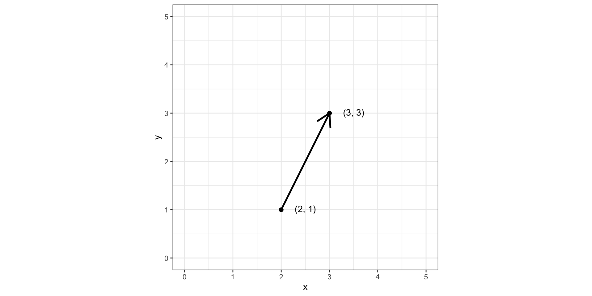
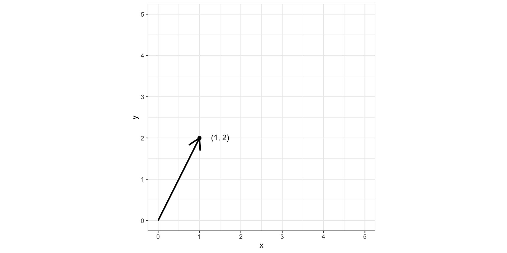
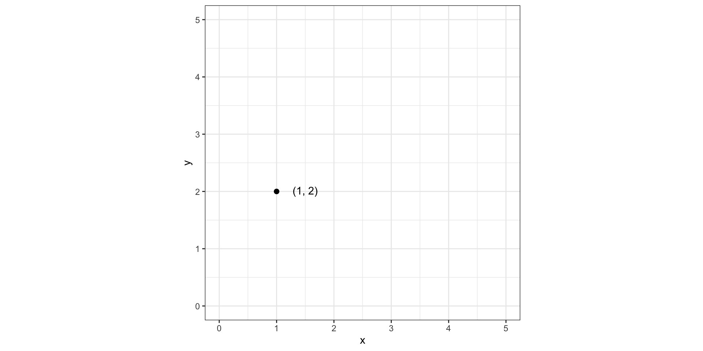
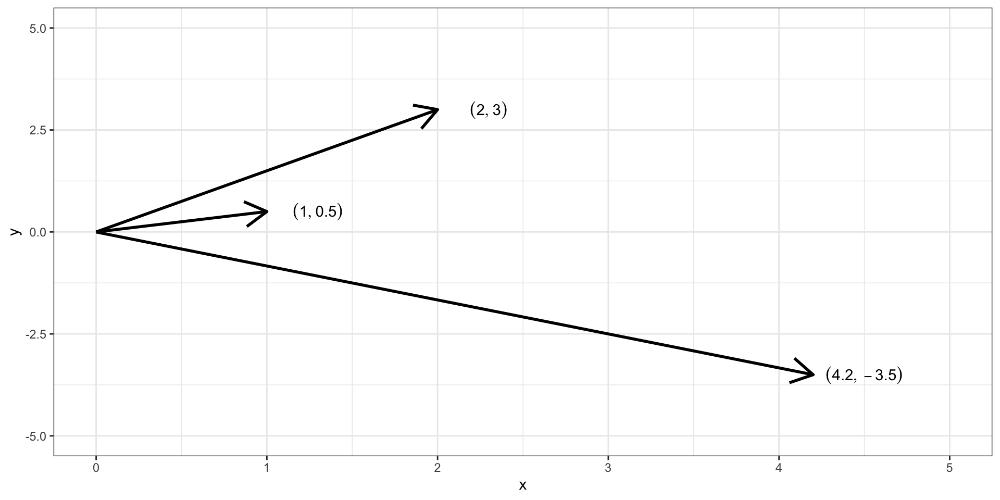

L1 // Основы R. Типы и структуры данных. Функции и управляющие конструкции
Что будет?
- R как язык программирования
- Команды. Операторы и функции
- Переменные и объекты
- Данные в R
- Типы данных
- Структуры данных
- Функции
- Структура и создание функции
- Условные ветвления и циклы
L1.1 // Основы R. Типы и структуры данных
R как язык программирования. Команды
- математические операции
- логические операции
- функции

Математические операции
Все в наличии:
[1] 5[1] 3[1] 60[1] 390625[1] 0.5714286[1] 1[1] 2Скобки работают:
Функции
Можно посчитать корень:
Или логарифм:
Джентельменский набор функций богат:
Логические операции
Операторы сравнения:
[1] TRUE[1] FALSE[1] TRUE[1] FALSE[1] FALSE[1] TRUEЛогические операторы И (&) и ИЛИ (|):
Переменные и объекты
Результаты вычислений и преобразований хотелось бы сохранять.
Над объектами тоже можно совершать разные операции:
Типы данных
Тип данных это что?
Тип данных — это характеристика данных, которая определяет:
- множество допустимых значений, которые могут принимать данные этого типа
- допустимые операции над данными этого типа
numeric
Это числа с десятичной частью.
integer
Это целые числа.
Хм…
complex
Комплексные числа тоже существуют, но я даже не знаю, когда вам придется их использовать.
character
Текст тоже надо как-то хранить.
logical
Просто, ясно, лаконично — всего два возможных значения.
factor
Бывают такие переменные, которые группируют наши данные. Например,
- город проживания (
Москва,Санкт-Петербург,Казань,Екатеринбург) - уровень образования (
бакалавриат,специалитет,магистратура,аспирантура) - экспериментальная группа (
group1,group2,control) - и др.
Обычно они текстовые. Для них был придуман тип данных factor.
Ordered factor (упорядоченный фактор) — тип данных, который позволяет задать порядок групп. Например,
- уровень образования:
bachelor<master<phd<postdoc - сложность экспериментальной задачи:
easy<medium<hard - и др.
Специальные литералы
NA
Пропущенное значение (Not Available). Обозначает отсутствие значения там, где оно вроде бы должно быть. Причины могут быть разные:
- технические ошибки записи данных
- ошибки настройки платформы — забыли сделать ответы обязательными
- организация исследования — ограничили время на ответ
- «честный» пропуск — дали возможность не отвечать на вопрос
- предобработка данных — специально создали
NA, чтобы далее с ними работать - и др.
NaN
Это не число (Not a Number).
NULL
Это ничто. Пустота. Используется для задания аргументов функций.
Структуры данных
Структура данных это что?
Структура данных — это способ и форма объединения однотипных и/или логически связанных данных.

Датафрейм
Воплощение привычной нам «таблицы» в R.
# A tibble: 6 × 10
carat cut color clarity depth table price x y z
<dbl> <ord> <ord> <ord> <dbl> <dbl> <int> <dbl> <dbl> <dbl>
1 0.23 Ideal E SI2 61.5 55 326 3.95 3.98 2.43
2 0.21 Premium E SI1 59.8 61 326 3.89 3.84 2.31
3 0.23 Good E VS1 56.9 65 327 4.05 4.07 2.31
4 0.29 Premium I VS2 62.4 58 334 4.2 4.23 2.63
5 0.31 Good J SI2 63.3 58 335 4.34 4.35 2.75
6 0.24 Very Good J VVS2 62.8 57 336 3.94 3.96 2.48Это сложная структура данных. Чтобы понять всю её мощь, необходимо начать с более простых.
Векторы
Вектор — это набор чисел.
\[ \pmatrix{1 & 4 & 36 & -8 & 90.1 & -14.5} \]
От направленного отрезка к набору чисел [1]
Возьмем направленный отрезок (вектор):
От направленного отрезка к набору чисел [2]
Договоримся, что все векторы у нас начинаются из точки \((0, 0)\):
От направленного отрезка к набору чисел [3]
Уберем вектор:
От направленного отрезка к набору чисел [4]
Получается, можно просто записать:
\[ \pmatrix{1 & 2} \]
Это одно и то же
\[ \pmatrix{1 & 0.5}, \quad \pmatrix{2 & 3}, \quad \pmatrix{4.2 & -3.5} \]
Обобщаем вектор
Вектор — это набор элементов одного типа.
Индексация векторов
Из вектора можно вытащить его элемент:
Векторизация
Для того, чтобы выполнить операцию на всем векторе поэлементно, не нужно перебирать его элементы.
Recycling
Если мы будем, например, складывать два вектора разной длины, то более короткий зациклится.
Матрицы

Матрицы
[,1] [,2] [,3] [,4]
[1,] 1 4 7 10
[2,] 2 5 8 11
[3,] 3 6 9 12 [,1] [,2] [,3]
[1,] 1 5 9
[2,] 2 6 10
[3,] 3 7 11
[4,] 4 8 12 [,1] [,2] [,3] [,4]
[1,] 1 2 3 4
[2,] 5 6 7 8
[3,] 9 10 11 12 [,1] [,2] [,3]
[1,] 1 2 3
[2,] 4 5 6
[3,] 7 8 9
[4,] 10 11 12Индексация матриц
Из матрицы можно вытащить её элементы:
Массивы
- Вектор — одномерный массив.
- Матрица — двумерный массив.
- Массивы — структуры, которые объединяют данные только одного типа.
При объединении разных типов данных в одном массиве происходит приведение типов (coercion) по следующей иерархии:
logical → integer → numeric → complex → character
Списки
Списки позволяют объединять массивы различных типов данных.

Списки
$v1
[1] 1.0 6.0 -34.0 7.7
$v2
[1] "Москва" "Санкт-Петербург" "Нижний Новгород" "Пермь"
$m1
[,1] [,2] [,3] [,4]
[1,] 1 4 7 10
[2,] 2 5 8 11
[3,] 3 6 9 12
$ls
$ls$v
[1] 1 2 3 4 5 6 7 8 9 10 11 12
$ls$m
[,1] [,2] [,3] [,4]
[1,] 1 2 3 4
[2,] 5 6 7 8
[3,] 9 10 11 12Индексация списков
$v1
[1] 1.0 6.0 -34.0 7.7[1] 1.0 6.0 -34.0 7.7$v
[1] 1 2 3 4 5 6 7 8 9 10 11 12
$m
[,1] [,2] [,3] [,4]
[1,] 1 2 3 4
[2,] 5 6 7 8
[3,] 9 10 11 12 [,1] [,2] [,3] [,4]
[1,] 1 2 3 4
[2,] 5 6 7 8
[3,] 9 10 11 12Собираем датафрейм
- возьмем список
- потребуем, чтобы его элементами были векторы
- потребуем, чтобы эти векторы были одинаковой длины
- расположим их «вертикально»

Индексация датафрейма
# A tibble: 6 × 10
carat cut color clarity depth table price x y z
<dbl> <ord> <ord> <ord> <dbl> <dbl> <int> <dbl> <dbl> <dbl>
1 0.23 Ideal E SI2 61.5 55 326 3.95 3.98 2.43
2 0.21 Premium E SI1 59.8 61 326 3.89 3.84 2.31
3 0.23 Good E VS1 56.9 65 327 4.05 4.07 2.31
4 0.29 Premium I VS2 62.4 58 334 4.2 4.23 2.63
5 0.31 Good J SI2 63.3 58 335 4.34 4.35 2.75
6 0.24 Very Good J VVS2 62.8 57 336 3.94 3.96 2.48[1] 0.23 0.21 0.23 0.29 0.31 0.24# A tibble: 3 × 10
carat cut color clarity depth table price x y z
<dbl> <ord> <ord> <ord> <dbl> <dbl> <int> <dbl> <dbl> <dbl>
1 0.29 Premium I VS2 62.4 58 334 4.2 4.23 2.63
2 0.31 Good J SI2 63.3 58 335 4.34 4.35 2.75
3 0.24 Very Good J VVS2 62.8 57 336 3.94 3.96 2.48# A tibble: 6 × 3
cut color price
<ord> <ord> <int>
1 Ideal E 326
2 Premium E 326
3 Good E 327
4 Premium I 334
5 Good J 335
6 Very Good J 336# A tibble: 4 × 2
carat price
<dbl> <int>
1 0.23 326
2 0.21 326
3 0.23 327
4 0.29 334L1.2 // Основы R. Функции и управляющие конструкции
Функции
Если какой-либо кусок кода повторяется более трех раз, имеет смысл обернуть его в функцию.
Функция — это некий черный ящик, который
- принимает что-либо на вход
- проделывает с этим какие-либо операции
- и что-то возвращает
Синтаксис функции
Элементы функции:
- имя функции (
function_name) — как мы к ней будем обращаться при вызове - аргументы функции (
arguments) — какие значения и объекты она принимает на вход - тело функции (
body) — что она делает с входными объектами - возвращаемое значение (
return()) — что функция вернет в качестве результата работы
Вызов функции:
Пример функции
Упростим синтаксис
Если функция простая, можно не создавать временные объекты:
Если функция короткая, можно даже не писать return():
Пример более полезной функции
mr_preproc <- function(d) {
require(tidyverse)
d |> select(
# select columns we need
"Индивидуальный_код",
correctAns,
base_pic,
rotated_pic,
resp_MR_easy.keys,
resp_MR_easy.corr,
resp_MR_easy.rt
) |>
drop_na() |> # remove technical NAs (recording artefacts, not missing data)
mutate(task = "MR",
# add task name (mental rotation)
level = "easy",
# add difficulty level
trial = 1:16) |> # number trials
rename(
"id" = "Индивидуальный_код",
# rename columns for handy usage
"key" = resp_MR_easy.keys,
"is_correct" = resp_MR_easy.corr,
"rt" = resp_MR_easy.rt
) -> MR_easy # ready to use
d |> select(
# select columns we need
"Индивидуальный_код",
correctAns,
base_pic,
rotated_pic,
resp_MR_medium.keys,
resp_MR_medium.corr,
resp_MR_medium.rt
) |>
drop_na() |> # remove technical NAs (recording artefacts, not missing data)
mutate(task = "MR",
# add task name (mental rotation)
level = "medium",
# add difficulty level
trial = 1:16) |> # number trials
rename(
# rename columns for handy usage
"id" = "Индивидуальный_код",
"key" = resp_MR_medium.keys,
"is_correct" = resp_MR_medium.corr,
"rt" = resp_MR_medium.rt
) -> MR_medium # ready to use
d |> select(
# select columns we need
"Индивидуальный_код",
correctAns,
base_pic,
rotated_pic,
resp_MR_hard.keys,
resp_MR_hard.corr,
resp_MR_hard.rt
) |>
drop_na() |> # remove technical NAs (recording artefacts, not missing data)
mutate(task = "MR",
# add task name (mental rotation)
level = "hard",
# add difficulty level
trial = 1:16) |> # number trials
rename(
# rename columns for handy usage
"id" = "Индивидуальный_код",
"key" = resp_MR_hard.keys,
"is_correct" = resp_MR_hard.corr,
"rt" = resp_MR_hard.rt
) -> MR_hard # ready to use
# bind all conditions of mental rotation task to one tibble
bind_rows(MR_easy, MR_medium, MR_hard) -> MR
return(MR)
}Условный оператор
Иногда при написании функции может понадобиться обработать какие-то важные случаи.
- Например, в двух запусках сбора данных столбцы были названы по-разному: если это не учесть, код будет ломаться.
Для этого подойдет условный оператор.
Структура условного оператора
Пример функции с условным оператором
Пример функции из реального проекта с условным оператором
ms_preproc <- function(d) {
require(tidyverse)
# Since we our participants could fill the fields in any order,
# here is a function which allows us to count correct inputs
# our subjects made.
if ("mouse_MSe.time" %in% colnames(d)) {
d |> select(
"Индивидуальный_код",
matches("^noun"),
matches("resp\\d\\.text$"),
"mouse_MSe.time"
) |>
filter_at(vars(paste0("noun", 1:3)), all_vars(!is.na(.))) |>
filter_at(vars(paste0("noun", 4:7)), all_vars(is.na(.))) |>
mutate(task = "MS",
level = "easy") |>
rename(
"resp1" = resp1.text,
"resp2" = resp2.text,
"resp3" = resp3.text,
"id" = "Индивидуальный_код",
"rt" = "mouse_MSe.time"
) |>
select(-c(paste0("noun", 4:7))) -> MS_easy
d |> select(
"Индивидуальный_код",
matches("^noun"),
matches("MSm.text$"),
"mouse_MSm.time"
) |>
filter_at(vars(paste0("noun", 4:5)), all_vars(!is.na(.))) |>
filter_at(vars(paste0("noun", 6:7)), all_vars(is.na(.))) |>
mutate(task = "MS",
level = "medium") |>
rename("id" = "Индивидуальный_код",
"rt" = "mouse_MSm.time") |>
rename_with(.fn = str_replace_all,
pattern = "_MSm\\.text",
replacement = "") |>
select(-noun6, -noun7) -> MS_medium
d |> select(
"Индивидуальный_код",
matches("^noun"),
matches("MSh.text$"),
"mouse_MSh.time"
) |>
filter_at(vars(paste0("noun", 1:7)), all_vars(!is.na(.))) |>
mutate(task = "MS",
level = "hard") |>
rename("id" = "Индивидуальный_код",
"rt" = "mouse_MSh.time") |>
rename_with(.fn = str_replace_all,
pattern = "_MSh\\.text",
replacement = "") -> MS_hard
} else {
d |> select("Индивидуальный_код",
matches("^noun"),
matches("resp\\d\\.text$")) |>
filter_at(vars(paste0("noun", 1:3)), all_vars(!is.na(.))) |>
filter_at(vars(paste0("noun", 4:7)), all_vars(is.na(.))) |>
mutate(task = "MS",
level = "easy",
rt = NA) |>
rename(
"resp1" = resp1.text,
"resp2" = resp2.text,
"resp3" = resp3.text,
"id" = "Индивидуальный_код"
) |>
select(-c(paste0("noun", 4:7))) -> MS_easy
d |> select("Индивидуальный_код",
matches("^noun"),
matches("MSm.text$")) |>
filter_at(vars(paste0("noun", 4:5)), all_vars(!is.na(.))) |>
filter_at(vars(paste0("noun", 6:7)), all_vars(is.na(.))) |>
mutate(task = "MS",
level = "medium",
rt = NA) |>
rename("id" = "Индивидуальный_код") |>
rename_with(.fn = str_replace_all,
pattern = "_MSm\\.text",
replacement = "") |>
select(-noun6, -noun7) -> MS_medium
d |> select("Индивидуальный_код",
matches("^noun"),
matches("MSh.text$")) |>
filter_at(vars(paste0("noun", 1:7)), all_vars(!is.na(.))) |>
mutate(task = "MS",
level = "hard",
rt = NA) |>
rename("id" = "Индивидуальный_код") |>
rename_with(.fn = str_replace_all,
pattern = "_MSh\\.text",
replacement = "") -> MS_hard
}
tibble(
id = MS_easy$id[1],
trials = 1:16,
MS_easy_n = n_count(MS_easy),
MS_easy_rt = MS_easy$rt,
MS_medium_n = n_count(MS_medium),
MS_medium_rt = MS_medium$rt,
MS_hard_n = n_count(MS_hard),
MS_hard_rt = MS_hard$rt
) |>
pivot_longer(cols = -c("id", "trials"), values_to = "value") |>
separate(name, c("task", "level", "name")) |>
pivot_wider(values_from = value, names_from = name) |>
mutate(acc = ifelse(level == "easy", n / 3,
ifelse(
level == "medium", n / 5,
ifelse(level == "hard", n / 7, NA)
))) -> MS
return(MS)
}Вне функций
Вне функций условный оператор практически не используется, потому что для предобработки данных есть удобная функция ifelse().
Циклы
То, что мы написали функция, чтобы не дублировать код — это хорошо, однако эту функцию нам все равно придется запускать много раз, если нам надо этот кусок кода повторить.
Поэтому используем цикл:
Пример простеньких циклов
Пример цикла для чтения и предоработки данных
for (i in 1:length(files)) {
print(files[i])
d <- read_csv(files[i], show_col_types = FALSE)
MR_data |> bind_rows(mr_preproc(d) |> mutate(file = files[i])) -> MR_data
ST_data |> bind_rows(st_preproc(d) |> mutate(file = files[i])) -> ST_data
MS_data |> bind_rows(ms_preproc(d) |> mutate(file = files[i])) -> MS_data
NASATLX_data |> bind_rows(nasatlx_preproc(d) |> mutate(file = files[i])) -> NASATLX_data
SEQUENCE_data |> bind_rows(sequence_preproc(d) |> mutate(file = files[i])) -> SEQUENCE_data
}Циклы в R — это зло! Они долго работают!
Да, циклы работает не быстро — это правда. Но, с другой стороны, мы и не терабайты данных анализируем.
Допустим, у нас 50 респондентов. Цикл, подобный тому, что на предыдущем слайде, отбработает секунд за 5. Даже чай не успеете заварить.
Безусловно, есть более изящные и быстрые инструменты, и с ними мы познакомимся на предобработке данных. Но в целом, можно и циклом обойтись.
Конечно, если у вас огромные датасеты и вы работаете с Big Data, то прогон цикла может значительно затянуться — в этом случае разумно сразу использовать другие инструменты.
L1 // Основы R. Типы и структуры данных. Функции и управляющие конструкции
Антон Ангельгардт
WLM 2023